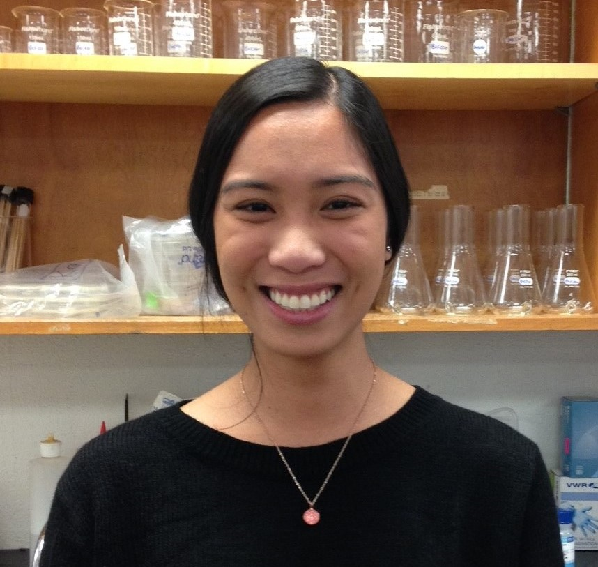
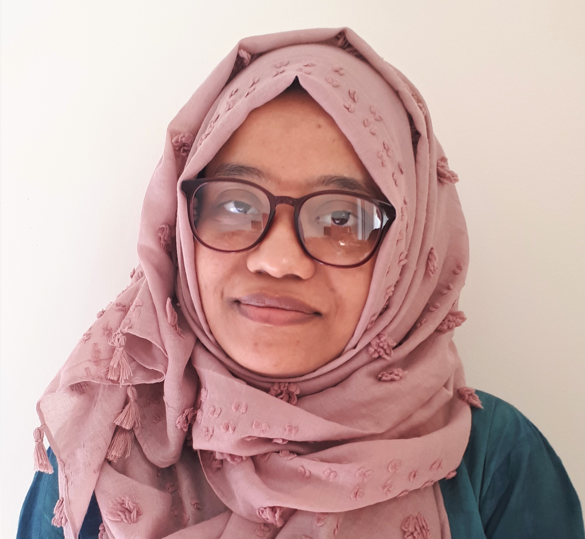

Lab members

Dr. Matthew Bakker
Principal investigator. Matthew completed his PhD in Plant Pathology at the University of Minnesota. He did a post-doc at Colorado State University and worked as a staff scientist with the U.S. Department of Agriculture before joining the Department of Microbiology at the University of Manitoba. Matthew teaches Microbes In Our Environment, Introductory Biogeochemistry, and contributes to Graduate Microbiology and to Evolution in Fungal Pathogens.

Anuradha Jayathissa
PhD student.
Anuradha is studying impacts of Fusarium spp. on malt quality, and investigating hydrophobin proteins produced by Fusarium. Anuradha is a fellow in the EvoFunPath training program.

Arshani Alukumbura
MSc student (co-advised with Dr. Dilantha Fernando).
Arshani is researching how application of a biocontrol agent for control of fusarium head blight impacts the broader microbiome of wheat plants and of crop residues. Collaborative research with Sabrina Sarrocco.

Janice Fajardo
MSc student.
Janice is investigating potential biocontrol agents against the fungal plant pathogen Fusarium graminearum. Her objective is to elucidate interactions between these microorganisms and find products that can reduce the growth of F. graminearum and its production of the mycotoxin deoxynivalenol in malting environments.

Tarin Farhana
MSc student (co-advised with Dr. Doug Cattani).
Tarin is researching fungal diseases of an emerging perennial grain crop, Intermediate Wheatgrass.

Mayantha Shimosh Kurera
MSc student (co-advised with Dr. Sean Walkowiak).
Shimosh is developing methods for rapidly identifying unknown Fusarium and rust strains via MALDI biotyping.

Mehrdad Mohammadiani
MSc student.
Mehrdad is researching how cropping systems impact soil microbiomes, and whether soil microbiome characterization can inform soil health assessment. Collaborative research with Steve Crittenden and Oscar Molina.
Natasha Melnichuk
Visiting scholar / PhD student intern.
Natasha is visiting from the Universidad Nacional de Rosario in Argentina, to research enzymes from Fusarium graminearum. Her internship is made possible by a scholarship from the Emerging Leaders in the Americas Program.
Danielle Pascual
Co-op student.
Danielle is characterizing barley floral tissues at a microbial scale, via electron microscopy.
Heidi Ahrenholtz
Co-op student.
Heidi is testing the pathogen-suppressiveness of soil microbiomes, and how this emergent community function is impacted by agricultural management.
Damian Elizalde Amezcua
Undergraduate honours student.
Damian is researching bacteria that chemically modify the mycotoxin deoxynivalenol.
Urim Iyasere
Co-op student. Urim is supporting various research projects in the lab.
Lab alumni from U Manitoba
Meagan Smith, Undergraduate summer research awardee
Brian Harrison, Co-op student
Shana Mann, Indigenous Summer Student Internship Program
Heather Inglis, Undergraduate; 2020 Research Manitoba Master’s Studentship Award (declined)
Shaima Eissa, Lab Technician III
Justin Panoy, High school volunteer
Lab alumni from US Department of Agriculture
Dr. Hina Shanakhat, PhD student intern
Dr. Briana Whitaker, PhD student intern; currently a Microbiologist at the U.S. Department of Agriculture;
Bacterial endophyte antagonism toward a fungal pathogen in vitro does not predict protection in live plant tissue
Jake Brown, Technician; currently a technician with the U.S. Department of Agriculture
Nathan Kemp, Research Associate; currently a technician with the U.S. Department of Agriculture;
Sarocladium zeae is a systemic endophyte of wheat and an effective biocontrol agent against fusarium head blight
Kelsey Roberts, Undergraduate summer intern